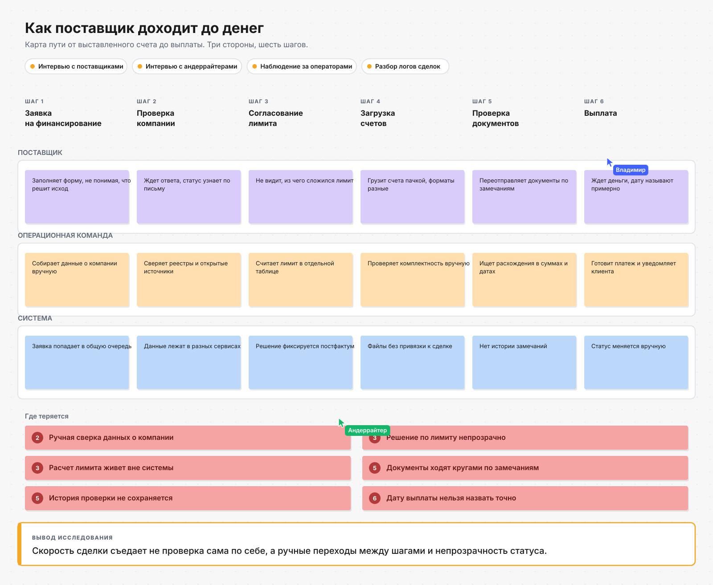

Роль: Product Designer
Зона ответственности: карта сценариев, сделки, проверка документов, workflow, дашборд, аналитика и дизайн-система.
Этапы: Discovery • UX Research • Process Mapping • UX/UI • Design System • Delivery
Stenn Technologies – международная факторинговая компания, предоставляющая оборотное финансирование экспортерам и поставщикам по всему миру. Базируется в Лондоне.

Макет прокручивается ползунком . Открыть целиком ↗
Масштабировать платформу и сократить время обработки операций – чтобы рост числа сделок не требовал пропорционального роста операционной команды.
Прежде чем менять экраны, разобрал сам путь: как поставщик доходит от заявки до денег и где сделка встает. Говорил с поставщиками и андеррайтерами, смотрел, как работает операционная команда, и разбирал логи сделок – там видно то, о чем в интервью не рассказывают.

Главный вывод: время съедает не проверка сама по себе, а ручные переходы между шагами и непрозрачность статуса – клиент не понимает, где сделка, а команда каждый раз собирает контекст заново.
Workflow – сквозной сценарий сделки: поставщик считает, сколько получит за свои счета, регистрируется, добавляет покупателя и лимит, загружает счета и отслеживает статус сделки до выплаты. Раньше этот путь держался на переписке и ручной сверке менеджеров – мы собрали его в один непрерывный процесс внутри платформы.


Обсудим сотрудничество
Расскажите о продукте, команде и сроках. Можно обсудить проект или роль в вашей команде.